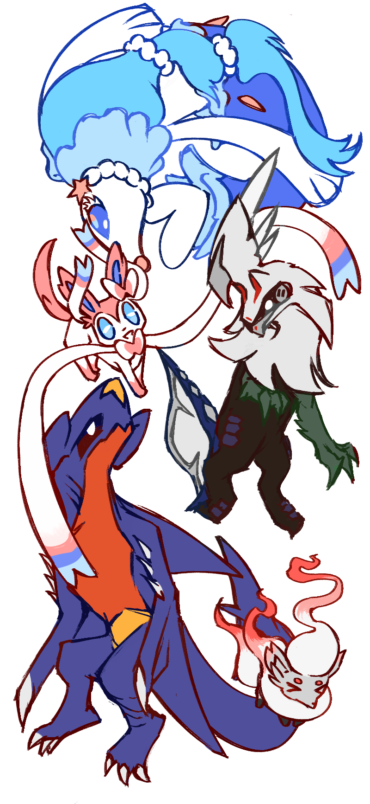

Everlasting Love: 
to love despite it all. that no matter how many times i mess up, stumble, and misstep, you always find a way to love me anyways. that no matter how many times you are hurt, scratched, and struck down by all of lifes cruelties, you still find a way to love me all of the same. although it's rare for someone to have love so everlasting, those who do have the warmest of hugs~
thank you for showing me how to love, caterina.
for the longest time, i was afraid of that love. the regret, the hurt, the hammering in my chest, it was so scary. yet, reflecting on the past year or so, i haven't felt that way. and it was all thanks to you!
you've always uplifted me, thought of me, embraced me, and cared about me, no matter how much i thought i didn't deserve it. and, i will be forever grateful for all of the unwavering love you've given me. it's because of you that i feel happier than ever before. that i find myself smiling and laughing, simply by being with you, even during the most mundane of moments. my days are so much brighter with you in them ≧◡≦
there are so many more things i want to thank you for, but there's one thing i want to say over all else. that, i hope you can find the same grace and love you have for me, and give it to yourself too. you've been through so much as of late: the mountains of work, academic pressure, the crushing weight of expectation; it all sounds so suffocating in a way i couldn't ever fathom. but, it's okay to take your time and go through all of this at your own pace (no matter who tries to tell you otherwise). your health and happiness is the most important thing, and nothing will ever change that.
and, although i probably don't have the skills, knowledge, or strength that you have, i will always be here if you need help with anything. not because it's a form of 'repayment', but because i want to. because i love you! afterall, these things we called relationships aren't transactional, are they?
thank you so so much for your everlasting love, caterina. happy thanksgiving!
love, stephen